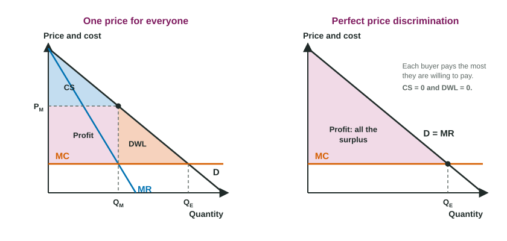

Price Discrimination
Price discrimination is charging different buyers different prices for the same good when costs do not differ.
Part 1 · Hook
Why this matters
Part 2 · Before you start
What this builds on
Part 3 · Prerequisite check
Quick check before you start
1. A monopolist produces where
- MR = MC, with the price read from demand
- P = MC
- P = ATC
- MR = 0
Show the answer
Quantity from MR = MC, price from demand above it.
- Correct: MR = MC, with the price read from demand:
- P = MC:
- P = ATC:
- MR = 0:
2. Demand with a price elasticity of 2.5 (absolute value) is
- elastic
- inelastic
- unit elastic
- perfectly inelastic
Show the answer
Greater than 1 means elastic: buyers are very sensitive to price.
- Correct: elastic:
- inelastic:
- unit elastic:
- perfectly inelastic:
3. Consumer surplus is the area
- under demand and above the price, out to the quantity bought
- under the price and above supply
- between demand and MC beyond the quantity sold
- under the MC curve
Show the answer
It is what buyers would pay minus what they do pay.
- Correct: under demand and above the price, out to the quantity bought:
- under the price and above supply:
- between demand and MC beyond the quantity sold:
- under the MC curve:
Part 4 · See it
See it first

Part 5 · Step by step
How it works, step by step
- A firm with market power can sort buyers and stop resaleit can charge different groups different prices
- It charges the less elastic group more and the more elastic group lessit captures more of buyers' willingness to pay, so profit rises
- With perfect price discrimination one more sale does not lower any other priceMR equals the price, so the MR curve is the demand curve
- It produces where demand meets MCoutput is the efficient quantity: deadweight loss is zero, consumer surplus is zero, and all surplus is profit
Part 6 · Key ideas
Key ideas
- Price discrimination: selling the same good at different prices to different buyers, for reasons other than cost.
- Three conditions: market power, a way to sort buyers by elasticity, and a way to stop resale.
- The less elastic group pays the higher price; the more elastic group pays less.
- Perfect price discrimination: each buyer pays the most they will pay. MR = D, so Q is where D = MC: no deadweight loss, no consumer surplus, all surplus is profit.
Part 7 · Misconception
A common mistake
The wrong idea: Perfect price discrimination makes consumers better off, because it removes the deadweight loss.
What actually happens: The deadweight loss disappears, so total surplus is as large as it can be, but every bit of it goes to the firm: consumer surplus falls to zero. Efficiency and fairness are different questions.
Part 8 · Check yourself
Check yourself
Exam-style questions. Anything you miss goes into your review queue.
1. Price discrimination is
- charging a higher price for a better version of a good that costs more to make
- charging more in a city where shipping costs are higher
- cutting the price for each buyer by the same amount during a sale
- selling one good at different prices to different buyers, not due to cost
Show the answer
Price discrimination is selling the same good to different buyers at different prices, where the price gap does not come from a difference in cost.
- charging a higher price for a better version of a good that costs more to make: A better version costs more to make; that is not price discrimination.
- charging more in a city where shipping costs are higher: A price gap that follows a cost gap is not discrimination.
- cutting the price for each buyer by the same amount during a sale: A sale for all buyers is one price, not different prices for different buyers.
- Correct: selling one good at different prices to different buyers, not due to cost: Right: the prices differ because buyers differ.
Data
Halloway Cinema: two groups of ticket buyers
| Group | Price elasticity of demand (absolute value) | Ticket price (dollars) | Tickets sold per night |
|---|---|---|---|
| Students (with a student ID) | 2.5 | 6 | 200 |
| Other adults | 1.5 | 10 | 300 |
2. Use the table. Why does Halloway charge students the lower price?
- Students' demand is more elastic, so a high price would lose many of them
- Students' demand is less elastic, so they buy whatever the price
- Halloway's marginal cost of a student seat is lower than for an adult seat
- Students buy fewer tickets, so each one is worth less to the cinema
Show the answer
Students' demand is more elastic (2.5) than other adults' demand (1.5). A price discriminator charges the higher price to the group that is less sensitive to price and the lower price to the more sensitive group.
- Correct: Students' demand is more elastic, so a high price would lose many of them: Right: the more elastic group gets the lower price.
- Students' demand is less elastic, so they buy whatever the price: Students' 2.5 is larger than adults' 1.5, so students are the more price-sensitive group.
- Halloway's marginal cost of a student seat is lower than for an adult seat: A seat costs the same to provide whoever sits in it; the difference is in demand.
- Students buy fewer tickets, so each one is worth less to the cinema: The price follows how sensitive each group is to price, not how many tickets it buys.
3. Why does Halloway ask to see a student ID at the door?
- To measure how elastic each student's demand is
- To keep adults from paying the student price, so the two groups stay separate
- To lower the cinema's marginal cost of each ticket it sells
- To make demand for tickets more inelastic among students
Show the answer
Price discrimination works only if the seller can tell the groups apart and stop buyers in the low-price group from reselling to the high-price group. The ID check does both.
- To measure how elastic each student's demand is: An ID shows who is a student; it does not measure elasticity.
- Correct: To keep adults from paying the student price, so the two groups stay separate: Right: preventing resale and sorting buyers are conditions for price discrimination.
- To lower the cinema's marginal cost of each ticket it sells: Checking IDs adds a little cost; it does not lower marginal cost.
- To make demand for tickets more inelastic among students: The check sorts buyers; it does not change how they respond to price.
4. Use the table. What is Halloway's total revenue per night from both groups, in dollars?
Type a number. A four-function calculator is allowed, as on the exam.
Show the answer
- Answer: 4200
5. For a perfectly price-discriminating monopolist, the marginal revenue curve is
- below the demand curve, as for a single-price monopolist
- the same as the demand curve
- horizontal at the market price
- the same as the marginal cost curve
Show the answer
Selling one more unit does not lower the price paid by anyone else, so each unit adds its own price to revenue: the MR curve is the demand curve.
- below the demand curve, as for a single-price monopolist: That holds when the price must be cut on every unit; here it is not.
- Correct: the same as the demand curve: Right: each extra unit brings in its own price.
- horizontal at the market price: That describes a price taker.
- the same as the marginal cost curve: MR and MC are different curves; the firm produces where they cross.
6. When a monopolist moves from one price to perfect price discrimination, what happens to consumer surplus and deadweight loss?
- Consumer surplus falls to zero, and deadweight loss falls to zero
- Consumer surplus falls to zero, and deadweight loss grows
- Consumer surplus rises, and deadweight loss falls to zero
- Both stay the same, but the firm's profit rises
Show the answer
Each buyer pays the most they will pay, so consumer surplus falls to zero, and the firm produces out to where demand meets MC, so deadweight loss falls to zero. All of the surplus becomes the firm's profit.
- Correct: Consumer surplus falls to zero, and deadweight loss falls to zero: Right: the firm takes all the surplus and produces the efficient quantity.
- Consumer surplus falls to zero, and deadweight loss grows: Output rises to where demand meets MC, so the deadweight loss disappears.
- Consumer surplus rises, and deadweight loss falls to zero: Each buyer pays their highest price, so no consumer surplus is left.
- Both stay the same, but the firm's profit rises: Profit rises because surplus moves from buyers to the firm and the lost surplus is now produced.
Part 9 · Summary
Summary
Part 10 · Up next
What comes next
Part 11 · Connections